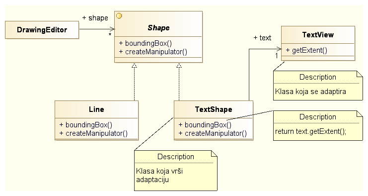
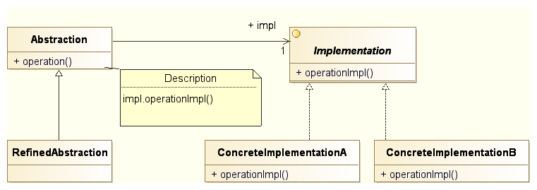
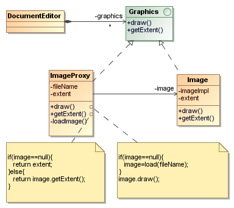

Softverski obrasci i komponente
Strukturalni obrasci
Prof. dr Igor Dejanović (igord at uns ac rs)
Kreirano 2022-11-01 Tue 23:52, pritisni ESC za mapu, m za meni, Ctrl+Shift+F za pretragu
Sadržaj
1. Strukturalni softverski obrasci
Bave se udruživanjem objekata i klasa, korišćenjem nasleđivanja, kompozicije i delegacije, u cilju formiranja složenijih struktura.
2. Adapter
2.1. Adapter
- Prilagođavamo komponentu čija nam je funkcionalnost potrebna ali njen interfejs ne odgovara našim zahtevima.
- Npr. prilagođavanje COTS (Commercial Of-The-Shelf) komponenti našem sistemu ili prilagođavanje starih komponenti zahtevima novog sistema.
- Kreiranje komponente tako da je moguće koristiti u različitim, unapred nepoznatim, scenarijima.
- Poznat još i kao Wrapper.
2.2. Primer

2.3. Struktura

2.4. Dve verzije
- Baziran na klasama i nasleđivanju – Klasa koja se adaptira se nasleđuje i klasa naslednica implementira odgovarajući interfejs.
- Baziran na objektima i delegaciji – Objektu koji se adaptira se delegiraju pozivi od strane adapter objekta.
2.5. Napomene
- Količina posla koju adapter radi varira od obične konverzije parametara i naziva metoda do podrške za potpuno drugačiji set operacija.
- Izmenjivi adapteri (Pluggable adapters) – Kreiranje komponente tako da se unapred predvidi adaptacija objekata sa kojima treba da sarađuje iako unapred objekti i njihove klase nisu poznati. Primer TreeDisplay.1
2.6. Primer - TreeDisplay
3. Bridge
3.1. Bridge
Razdvajanje abstrakcije od implementacije tako da se mogu nezavisno menjati.
3.2. Primer problema
3.3. Primena Bridge obrasca
3.4. Struktura

3.5. Kada korisititi
- Kada želimo izbeći trajno vezivanje apstrakcije i implementacije. Na primer, ako je potrebna izmena implementacije u vreme izvršavanja aplikacije.
- Kada želimo da omogućimo nezavisno proširenje apstrakcije i implementacije kroz nasleđivanje.
- Kada imamo složene hijerarhije klasa kao što je pokazano u primeru.
3.6. Instanciranje konkretne implementacije
Odluka o instanciranju konkretne implementacije:
- Konstruktor apstrakcije putem parametra (ako zna za sve implementacije).
- Delegiranje nadležnosti drugom objektu – videti Factory Method.
4. Composite
4.1. Composite
- Kompozicija objekata u strukture oblika stabla.
- Uniformno tretiranje prostih i složenih objekata.
4.2. Struktura obrasca

4.3. Primer

4.4. Napomena
GOF knjiga – metode za manipulaciju child elementima u Component abstraktnoj klasi.
4.5. Kada koristiti?
- Ako želite da kreirate hijerarhije objekata tipa celina-deo.
- Želite da klijent može da ignoriše razlike između kompozitnih i prostih objekata i tretira ih na uniforman način.
4.6. Demonstracija obrasca Composite na primeru u Javi
5. Decorator
5.1. Decorator
- Dodavanje odgovornosti objektu dinamički.
- Fleksibilna alternativa za nasleđivanje.
- Po strukturi sličan Adapter obrascu ali ima drugu namenu.
5.2. Motivacija
5.3. Primer

5.4. Struktura obrasca
6. Proxy
6.1. Proxy
- Posredovanje između objekta koji pruža servis i objekta koji koristi servis u cilju implementacije kontrole pristupa, transparentnog pristupa udaljenim objektima, AOP tehnika i sl.
- Implementacija najčešće delegira pozive metoda objektu koji pruža
- Klijent nije svestan da postoji posrednik između njega i objekta koji obezbeđuje servis.
- Poznat i pod nazivom Surrogate.
6.2. Struktura obrasca

6.3. Kada se koristi?
- Odlaganje skupe inicijalizacije objekta – virtuelni proksi (Virtual Proxy) ili lenji proxy (Lazy Proxy).
- Pristup udaljenom objektu kao da je lokalni (upotrebom tehnologija za distribuirane objekte - CORBA, DCOM, RMI i sl.) – Remote Proxy.
- Provera prava pristupa objektu – Protective Proxy.
- Sinhronizacija pristupa (proveravanje da li je objekat zaključan prilikom pristupa), brojanje referenci (smart pointer), implementaciju AOP tehnika – Smart Proxy.
6.4. Primer - Lazy Proxy

6.5. Copy-On-Write optimizacija
- Posebna vrsta lenjeg ili virtuelnog proksija.
- Odlaganje kopiranja složenog objekta (videti Prototype obrazac) za trenutak kada se zatraži operacija modifikacije.
- Potrebno brojanje referenci: svako kreiranje novog proxy-ja uvećava brojač referenci, svako stvarno kopiranje ciljnog objekta umanjuje brojač referenci. Kada brojač referenci postane 0 objekat se može ukloniti.
6.6. Demonstracija obrasca Proxy na primeru u Javi
7. Literatura
- M. Grand, Patterns in Java: A Catalog of Reusable Design Patterns Illustrated with UML, John Wiley & Sons, Inc., vol. 1, 2002
- E. Gamma, R. Helm, R. Johnson, and J. M. Vlissides, Design Patterns: Elements of Reusable Object-Oriented Software, Addison-Wesley Professional, 1994